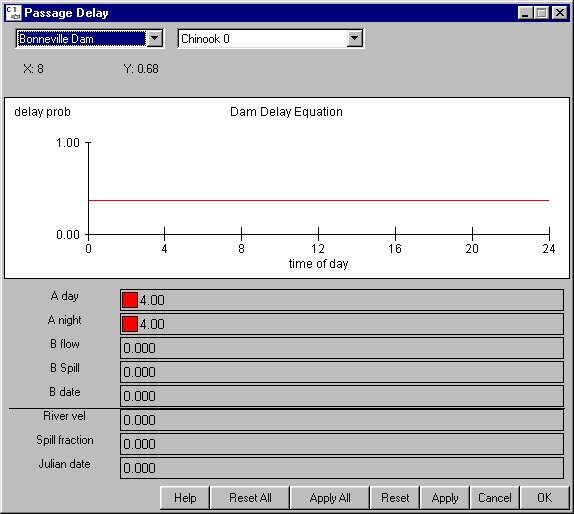

Delay Equation: Delay at Dams
Selecting Dam Delay Equation opens the Passage Delay window which displays the passage probability in six hour intervals. The Delay Equation is a COMPASS submodel that delays fish at a dam depending on the species, time of day, season, and flow. The delay is expressed in terms of a passage probability, not in terms of observed passage. The probability of passage depends on the model parameters; in all cases, increasing the parameters decreases the probability of delay and thus time spent in the forebay. The parameters are:
Delay Equation opens the Passage Delay window which displays the passage probability in six hour intervals. The Delay Equation is a COMPASS submodel that delays fish at a dam depending on the species, time of day, season, and flow. The delay is expressed in terms of a passage probability, not in terms of observed passage. The probability of passage depends on the model parameters; in all cases, increasing the parameters decreases the probability of delay and thus time spent in the forebay. The parameters are:
- A day: Constant term that determines probability of delay during daytime hours.
- A night: Constant term that determines probability of delay during nighttime hours.
- B flow: Coefficient that relates delay probability to river flow.
- B Spill: Coefficient that relates delay probability to percent river spilled.
- B date: Coefficient that relates delay probability to date in the season.
Several factors which affect delay are included in the display. Adjusting these factors does not change model data.
- River vel (display only): River velocity in the reservoir in miles/day.
- Spill fraction (display only): Percentage of water spilled at the dam.
- Julian date (display only): Julian Day.
This is an Equation Input window.

Dam Passage Delay window